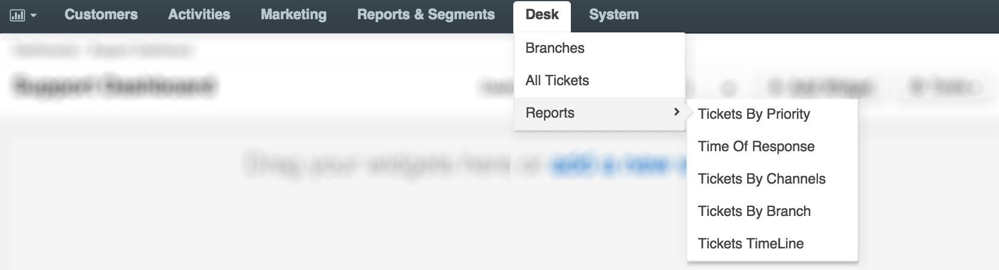
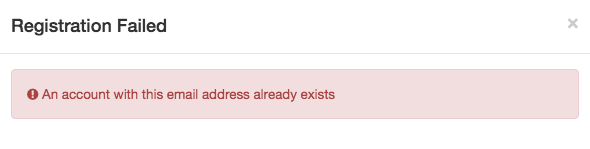

DiamanteDesk is an independent help desk system that can be easily integrated into the open-source OroCRM and in the near future it is going to be available for other CRMs. Therefore, DiamanteDesk can be installed as a standalone application or as a help desk extension to the OroCRM. To learn how to install DiamanteDesk, please refer to the Installation Guide.
The following guide is based on the assumption that DiamanteDesk is installed on the basis of OroCRM and describes the functionality related to the DiamanteDesk integration with this system.
When installed on the basis of the OroCRM, DiamanteDesk functionality is available at the Desk top menu.

This menu provides fast and easy access to the general functionality and data of the DiamanteDesk application, specifically:
In the Oro platform all the contacts related to any business activities are saved at Customers > Contacts. Please refer to the Oro documentation to learn more about contacts in OroCRM. Due to the DiamanteDesk integration with Oro, when a customer registers on the support portal to make a request or report an issue regarding the supported entity (online store, blog, etc.), the provided credentials are added both to the DaiamnteDesk and to the OroCRM contacts.
When a user registeres on the portal, the system automatically scans the contact database by the existing emails. If none of the emails match the provided credentials, a new contact is created based on the data provided by the user. If an account with the same email has been previously registered in the system, the following warning message is displayed:

The identical procedure occurs when OroCRM administartor creates a new DiamanteDesk user from the admin panel at Customers > Contacts > Create Customer.
This feature can be disabled at System > Configuration > DiamanteDesk.
When DiamanteDesk is installed on the basis of the OroCRM, administrators can view the tickets submitted to the system in the following sections:
Desk > Branches. Tickets in the DiamanteDesk are grouped into the Branches. Creating separate branches enables our Clients to group tickets according to the requests of specific users, locations, issues or according to the Channel the ticket came from.
Desk > All Tickets. Tickets can be accessed directly at the Tickets section. They are not grouped according to any category on this screen an can be filtered according to the ticket Key, Subject, Branch, Assignee, Priority, Status, or time period when it was Created or Updated
Customers > Accounts. Account records referred to as Accounts in OroCRM are created to collect and analyze the information on customer activity of a person or group of people belonging to a certain company or organization. Administrators can view all the tickets created or updated by the users belonging to this account at the read-only Support Tickets grid in the Additional Information section. It displays general ticket information, such as ticket Key, Subject, Status, Reporter and date and time when it was updated.
Customers > Contacts. The Customers screen contains information about all the customers who created tickets at the DiamanteDesk portal. Administrators can view all the tickets created or updated by the certain customer at the read-only Support Tickets grid in the Additional Information section. It displays general ticket information, such as ticket Key, Subject, Status and date and time when it was created.